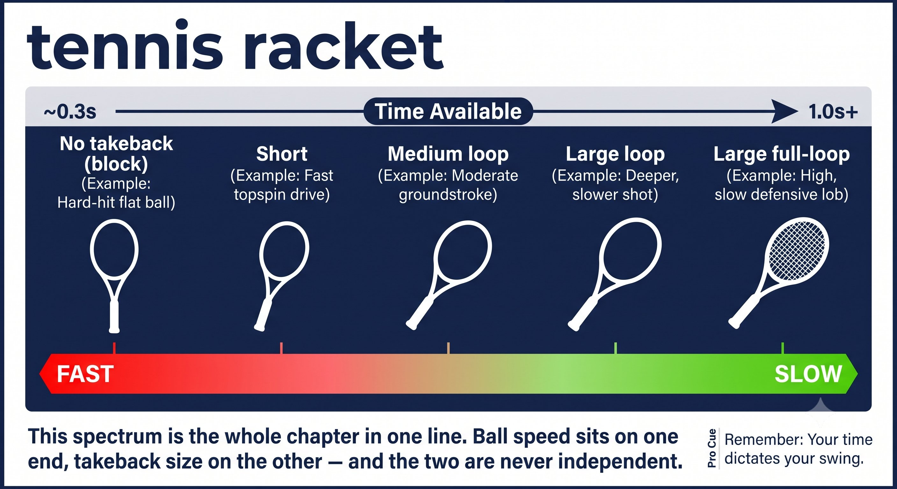
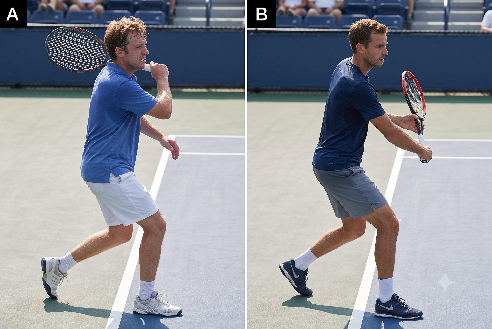
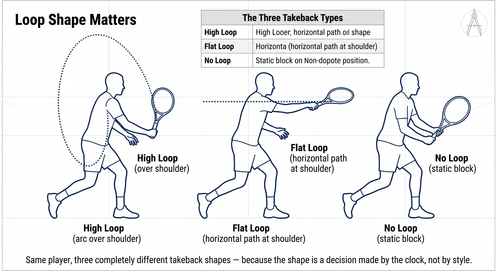
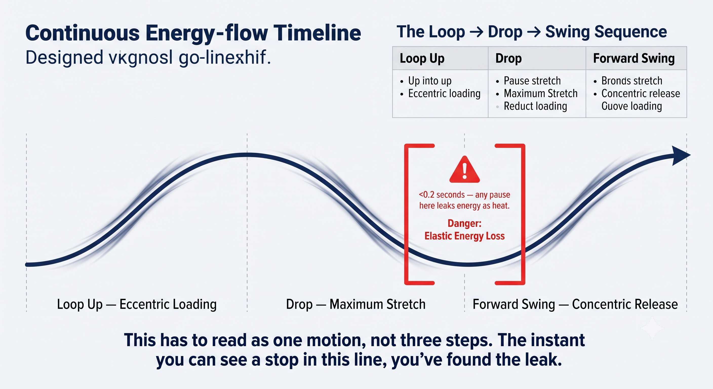

Chapter 5: The Energy Store
(English version of Chapter 5 in the United Tennis Handbook)
CHAPTER 5

Figure 1
THE ENERGY STORE
Takeback Length, Loop, and Timing
Takeback isn't style. It's energy storage, sized to match the time you actually have.
Takeback size decides how much time you have to accelerate. The faster the ball, the shorter the takeback. That’s physics, not preference.
— Henry Pham
The Fundamental: Takeback Is Energy Storage
Takeback has two dimensions, and together they determine how much energy you can store and release:
– Length — how far back the racket travels. Longer means more distance to accelerate through, which means more potential speed.
– Loop — the vertical shape of the backswing. A high loop adds gravity assist and shoulder stretch; a flat loop stays compact and quick.
The Principle
Takeback is the eccentric — the loading — phase of the stretch-shortening cycle. No load means no elastic recoil, which means no free power.
The Golden Rule: Incoming Speed Dictates Takeback Size
This is the most violated rule in club tennis.
Figure 5.1: This spectrum is the whole chapter in one line. Ball speed sits on one end, takeback size on the other — and the two are never independent.

Figure 2
The Rule
The faster the incoming ball, the shorter the takeback. Always. No exceptions.
Coach's Note
Watch club players face a fast serve: huge backswing, and they get jammed. Watch a pro face the same serve: shoulders turn, racket sets, essentially zero backswing. The ball is supplying the energy — you’re just redirecting it.
Figure 5.2: Same serve speed, two completely different backswings. The pro isn't more talented at timing — the pro is just using less takeback for the same ball.

Figure 3
The Three Takeback Types
Match the type of takeback to what the situation actually gives you.
Loop Shape Matters: High Loop Versus Flat Loop
The vertical shape of your takeback changes how energy enters the system.
Figure 5.3: Same player, three completely different takeback shapes — because the shape is a decision made by the clock, not by style.

Figure 4
The Rule
High loop gives you gravity assist and maximum stretch-shortening-cycle load, but it needs time. Flat loop is quick but stores less elastic energy. Match the loop to the time you actually have.
The Loop → Drop → Swing Sequence
Every takeback that includes a loop moves through three phases, and they have to flow into each other without a pause.
Figure 5.4: This has to read as one motion, not three steps. The instant you can see a stop in this line, you've found the leak.

Figure 5
The Rule
The drop phase has to flow directly into the forward swing. Any pause at the bottom of the loop and the stretch-shortening-cycle energy dissipates as heat. You have less than 0.2 seconds to make that transition.
Coach's Note
The hitch is the number one power killer at the club level. A player loops up, pauses at the top to "aim," then muscles the forward swing. The fix: a continuous loop into drop into swing, with no thinking at the bottom. Park your Quiet Eye early so there’s no last-moment aiming to tempt you into pausing.
Timing: When to Start the Takeback
Starting the takeback at the right moment is everything.
The Principle
Your takeback must be finished before the ball bounces on your side. The bounce is the "go" signal for the forward swing — not the signal to start your takeback.
Coach's Note
Drill it with a partner feeding balls. Say "turn" when the ball crosses the net, "drop" when it bounces, "hit" at contact. If you’re still taking the racket back when you say "drop," your takeback is too big for that ball speed.
Common Takeback Errors and Fixes
Here's how the common mistakes map to their fixes.
Takeback Height Matches Contact Height
The vertical starting position of your takeback should mirror the height where you expect to meet the ball.
Figure 5.5: The racket starts where the ball will be met. Low ball = low takeback; high ball = high takeback. Match the height, match the plane.
The Rule
Takeback height equals contact height. The racket starts where the ball will be met.
Drills: Matching Takeback to Ball Speed
Drill 1 — The Three-Speed Feed
– Partner feeds three speeds: slow (lob pace), medium (rally), fast (drive).
– You call the takeback type before you swing: "full," "medium," or "short."
– Partner confirms: "yes" or "too big / too small."
– Goal: 20 out of 20 correct takeback selections.
Drill 2 — Continuous Loop Shadow
– No ball. Continuous figure-8 loops with the racket.
– Focus: no pause at the bottom of the loop. Seamless loop → drop → swing.
– Add a front-leg brake at the exit of the 8, then a pulse.
– 20 reps. Feel the continuous SSC flow.
Drill 3 — Bounce, Drop, Hit
– Drop the ball, let it bounce, hit a forehand.
– Constraint: the racket must already be moving forward before the ball reaches the top of its bounce.
– This forces an early takeback — a late start becomes impossible.
– 10 reps each side.
Takeback completes by the bounce. Forward swing starts at the bounce. SSC amortization stays under 0.2 seconds.
BALL SPEED SETS TAKEBACK SIZE. THE BOUNCE STARTS THE FORWARD SWING. NO PAUSE AT THE BOTTOM.
Key Takeaways
– Match your takeback length to the incoming ball speed (see the table above).
– Finish the takeback by the time the ball bounces on your side.
– No pause at the bottom of the loop — keep loop, drop, and swing flowing as one motion.
– Match your takeback height to your expected contact height.
– Turn your body first; let the racket follow — don't take it back with the arm alone.
– Film check: freeze the video at the bounce. Is the racket fully back? If not, you’re late.
Where This Leads
This chapter establishes the energy variable — oncoming speed determining takeback — in the Q-V-ROOT-8-45-Impulse-Jin CORE system. Chapter 6 covers tension: the transmission system that lets the energy you’ve just stored actually reach the ball.